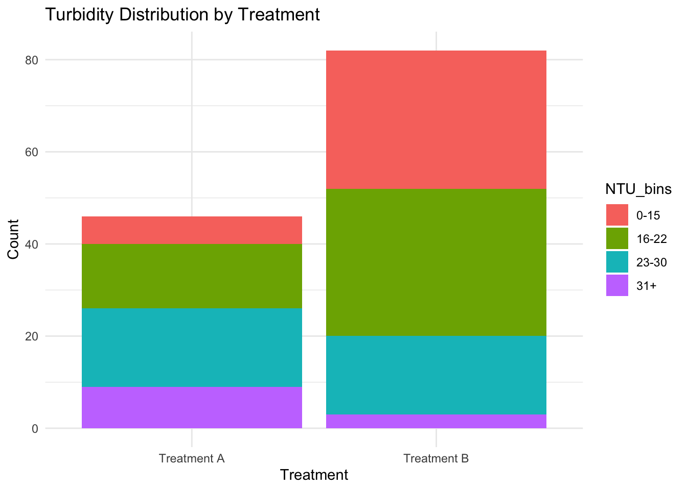
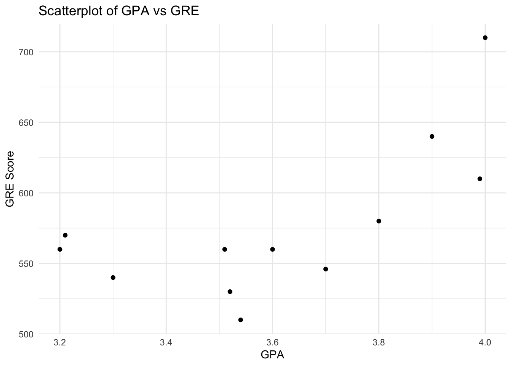
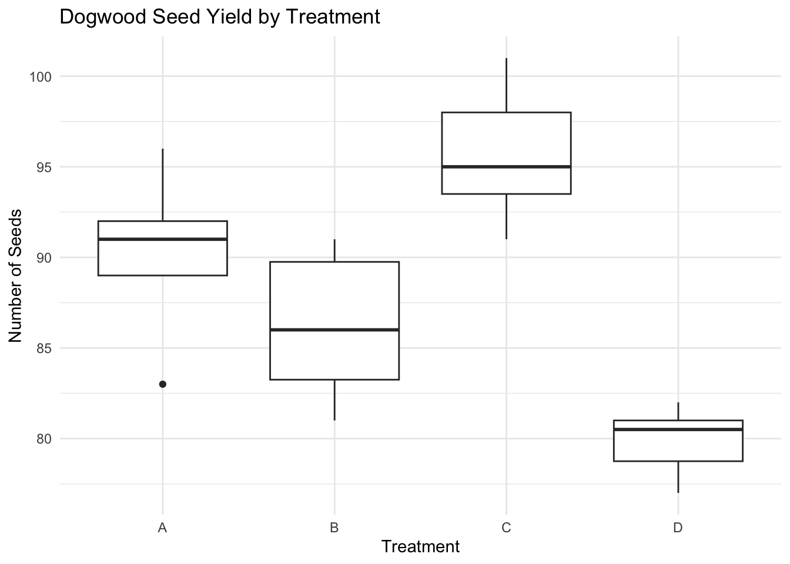

The following objects are masked from 'package:stats':
filter, lag
The following objects are masked from 'package:base':
intersect, setdiff, setequal, union
# Question 1: total_patients <-19side_effect_patients <-3expected_rate <-0.5binom_test <-binom.test(side_effect_patients, total_patients, p = expected_rate, alternative ="two.sided")print(binom_test)
Exact binomial test
data: side_effect_patients and total_patients
number of successes = 3, number of trials = 19, p-value = 0.004425
alternative hypothesis: true probability of success is not equal to 0.5
95 percent confidence interval:
0.03382625 0.39578455
sample estimates:
probability of success
0.1578947
Analysis: I used a binomial test because we’re comparing how many patients reported side effects (3 out of 19) to an expected rate (50%, or about 9.5 out of 19). This is a simple way to check if the new medication change made a difference.
Results: The p-value came out to 0.0044, which is super small—way less than 0.05. This means it’s really unlikely that the new rate (3 out of 19) is just random chance.
Interpretation: So yeah, the medication change actually seems to work. The side effects dropped way below what we’d expect if nothing had changed.
# Turbidity Distribution ntu_plot <-ggplot(ntu_data, aes(x = Treatment, fill = NTU_bins)) +geom_bar(position ="stack") +labs(title ="Turbidity Distribution by Treatment", x ="Treatment", y ="Count") +theme_minimal()print(ntu_plot)

Analysis: Here, I binned the turbidity levels into four categories (0-15, 16-22, 23-30, and 31+ NTU) because that’s what the question asked for. Then, I made a contingency table to see how often each treatment led to turbidity in those categories. A chi-square test checks if the treatments affect turbidity differently.
Results: The p-value was 0.0006, which is tiny. This tells me there’s a really clear difference between how the two treatments affect turbidity.
Interpretation: Both treatments don’t do the same thing—one of them probably works better at keeping turbidity low (or one is worse). The bar graph I made also shows that the distribution of turbidity levels isn’t the same for the two treatments.
Warning in cor.test.default(grad_school_data$GPA, grad_school_data$GRE, :
Cannot compute exact p-value with ties
print(spearman_corr)
Spearman's rank correlation rho
data: grad_school_data$GPA and grad_school_data$GRE
S = 118.83, p-value = 0.04593
alternative hypothesis: true rho is not equal to 0
sample estimates:
rho
0.5845215
# GPA vs GREgpa_gre_plot <-ggplot(grad_school_data, aes(x = GPA, y = GRE)) +geom_point() +labs(title ="Scatterplot of GPA vs GRE", x ="GPA", y ="GRE Score") +theme_minimal()print(gpa_gre_plot)

Analysis: I ran a Spearman correlation to see if there’s a relationship between GPA and GRE scores. I chose Spearman instead of Pearson because it’s more flexible and doesn’t assume the data is perfectly linear.
Results: The correlation coefficient was 0.585, and the p-value was 0.046. This means there’s a moderate positive relationship between GPA and GRE scores, and it’s statistically significant (barely!).
Interpretation: So yeah, students with higher GPAs tend to get better GRE scores, but it’s not a perfect relationship. The scatterplot kind of shows this too—you can see a trend, but it’s not super tight.
Kruskal-Wallis rank sum test
data: Seeds by Treatment
Kruskal-Wallis chi-squared = 25.629, df = 3, p-value = 1.141e-05
# Dogwood Seed Yield by Treatmentdogwood_plot <-ggplot(dogwood_seeds_data, aes(x = Treatment, y = Seeds)) +geom_boxplot() +labs(title ="Dogwood Seed Yield by Treatment", x ="Treatment", y ="Number of Seeds") +theme_minimal()print(dogwood_plot)

Analysis: I used the Kruskal-Wallis test here because we’re comparing seed yield across four different treatments, and the data might not be normally distributed. This test doesn’t care about that, which makes it a safe choice.
Results: The p-value was 0.00001 (basically zero), so there’s definitely a difference in seed yield between the treatments.
Interpretation: The treatments clearly matter for seed yield. The boxplot I made shows how the treatments vary, and you can tell some of them are better at boosting yield than others. If this were a real experiment, I’d probably run follow-up tests to figure out which treatments are the best.